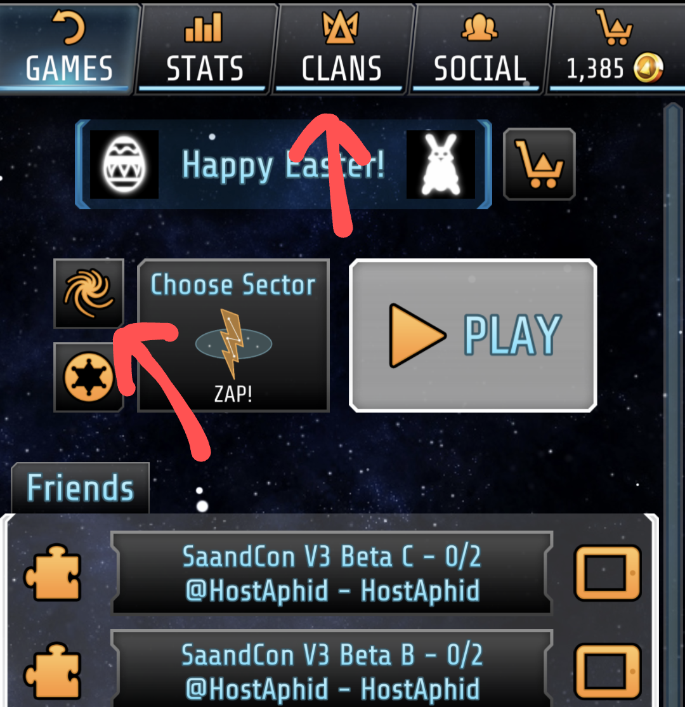
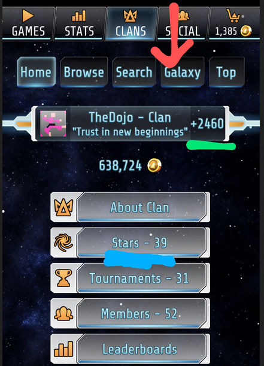

Welcome to the Galcon Galaxy War! Below you will find everything you need to get a comfortable understanding of the game and its mechanics for your forays in the war!
For UI, we have quite a few things going on. For starters we can view the Galaxy Map (GM) by going to the Clans
tab from the main Galcon lobby screen, or clicking the small spiral galaxy option next to the play button.
Note: This smaller button might not be available to you if you are below level 25!

Here you can see some basic info, such as your clans score/prod (treated the same in this GM type) underlined in green,
and star counts, underlined in blue. We want to click on the Galaxy tab next.
